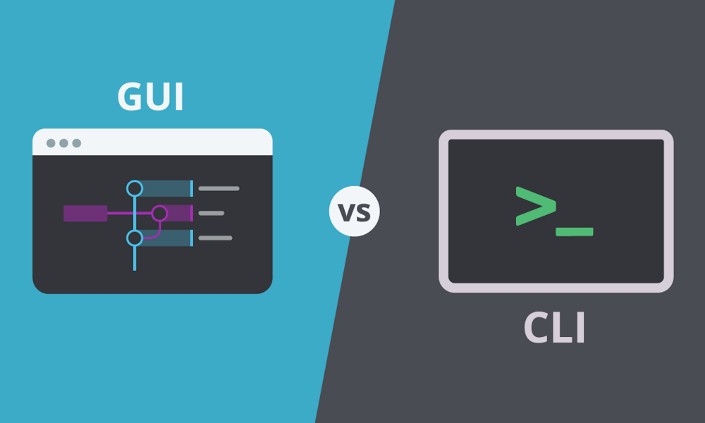

Muy bonito todo y eso, pero ¿y la interfaz de comandos?
¿De donde viene la interfaz de comandos?
Antes de 1970 los ordenadores no tenían interfaz gráfica, es decir no escritorio, no iconos, solo un fondo negro en el que escribias comandos. En ese tiempo no eran tan comunes los ordenadores, ¿te imaginas a un señor mayor aprendiendo comandos para poder ver sus mensajes?, yo no
Cuando llegó la primera interfaz gráfica de usuario (GUI para los amigos), todo esto cambió, los ordenadores mostraron un ambiente muy más suave y más familiar (por la gente acostumbrada a otros sistemas que sí tenían como los reproductores de unidades ópticas o el propio menú de algunas televisiones), gracias a eso se hicieron tan sumamente populares, gracias a eso hoy en día hasta perros y gatos tienen su cuenta de (@nekokorova).
¿Por qué las usamos

Si, como habrás intuido las GUI son la DigiEvolución de las terminales, ¿por que carajos las seguimos usando?, te voy a dar varías razones:
-
Porque son muy repetitivos, es decir si quieres borrar un archivo de 15 ordenadores en una empresa, con GUI lo buscas y borras, fácil.
Con terminal te calientas un poco la cabeza con la ruta completa (desde la /) y solo es copiar y pegar la linea de comandos.
-
Tienes un historial, cuando borras un archivo en entorno gráfico, no se guarda nada, en la terminal se guardan todos los comandos que usas, por decirlo así, es como si en la GUÍA se guarda el pixel de la pantalla del cual coges un archivo, todos los pixeles por los que pasas mientras lo arrastras y el píxel donde lo sueltas.
-
Permite crear demonios del sistema fácilmente, yo se, que a todos nos ha pasado, descargamos algo, estilo discord o un gestor de contraseñas y cuando enciendes el equipo se ejecuta automatico, y piensas: ”Ojala poder hacer que algun programa se iniciara automaticamente sin tener que liar la de Dios”
Pues en GUI se puede, pero es un dolor, mientras que en terminal puedes hacerlo de forma facilísima y no solo cuando se enciende, si no bajo cualquier condición, son las 12:00 has un análisis en búsqueda de MalWare y un montón de operaciones de la misma manera.
-
Más variedad de órdenes para el equipo, hay un porrón de comandos que no tienen interpretación en entorno gráfico y a parte de los que vienen, el terminal te permite crear los que tu quieras
¿Quíen la puede usar?
Parece un poco hecha para genios, que una persona normal no puede usarla, pero no, cualquier persona con un par de horas de práctica durante 2 días puede hacer cosas lokisimas, en un mes usándola diariamente a los ojos de tus amigos, pareceras un hacker que está enviando cohetazos a la Luna, pero si intentas aprenderte la teoría, sin nada de practica, te esperan largas tardes de estudio.
Consola VS Terminal VS CLI VS Shell
Habrás escuchado que muchas personas los llaman de manera diferente y pensarás:”es que son sinónimos, igual que mi tío Paco que le dicen Francisco, Fran, Paquito, Main Yauso ”, pues no exactamente.
-
Consola es como se le llamaba antes al ordenador.
-
Terminal es el programa que ejecuta el Shell (algo así como NetBeans para Java).
-
Shell es un “lenguaje” que se comunica directamente con el SO para hacer operaciones, como PowerShell para Windows
-
El interfaz de linea de comandos (CLI), es donde se escriben los comandos.
Pequeña reflexión
Una vez que tenemos una idea general de lo que es la terminal lo vamos a dejar aquí, porque desde mi punto de vista, el objetivo de la práctica no es hacer copia y pega de una lista, si no investigar y sacar información útil sobre un tema. Y volviendo a lo que he dicho antes:
“si intentas aprenderte la teoría, sin nada de practica, te esperan largas tardes de estudio”.